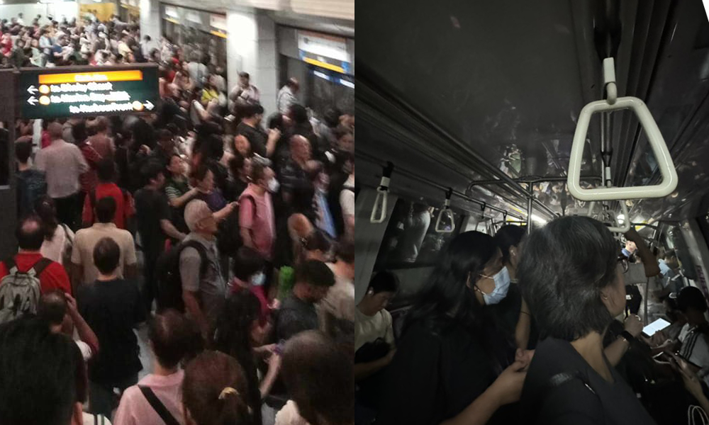

Circle Line disruption: Service between Marina Bay and Promenade stations has resumed
Commuters faced major disruptions during the evening peak hour on Tuesday (17 Sep), when a power fault briefly halted train services on Singapore’s Circle Line. The fault, which occurred just before 6pm, led to train stoppages in both directions, affecting passengers across multiple stations. SMRT reported that the fault was resolved within 15 minutes, stating in a 7.30pm update, “Fault cleared, train services are progressively returning to normal. Free regular buses are still available for all Circle Line stations.” However, passengers took to social media, criticizing the handling of the situation and the accuracy of updates provided by the transport operator. Public Frustration Over Delays and Poor Communication Many commuters who were stranded during the disruption shared their frustration on SMRT’s Facebook page. Some accused the operator of providing inaccurate information regarding the resumption of train services. A user at Paya Lebar station commented, “According to the staff, there is still no train service. Why can’t they stop people from tapping in? We only know about it when we reach the platform. AND WE NEED TO APPLY FOR OWN REFUND for tapping in.” Others questioned the claims that services had resumed and that free bus services were available. One passenger, who was stuck on a train between Tai Seng and Bartley from 5.45pm, wrote, “What free regular bus service? 15 minutes resolved? Some of us were stuck in the train… only reached Serangoon MRT at 6.45pm to find no free bus service.” Further comments highlighted the ongoing delays and lack of communication, with a commuter noting at 6.50pm, “We are all still stuck in the train!! For 30 minutes!” Another passenger reported a second stoppage, stating, “Got on Circle Line 15 minutes ago at Botanics after disruption, and it’s now at a standstill again. No one is communicating what’s happening or how long the delay might be. It’s a crowded train with young babies at risk.” Growing Discontent Over Fare Increases and Service Reliability In the midst of this disruption, SMRT faced a wave of public backlash over the recent public transport fare increases announced by the Public Transport Council (PTC). Many passengers linked the service breakdown to broader dissatisfaction with the fare hikes. One user commented, “SMRT still dare to ask PTC for a fare increase. Profits rather than commuters,” while another echoed the sentiment, “Increased fare should be given to reliable MRT or public transport. Just how appalling things are managed.” Others questioned the adequacy of fare increases to maintain the rail infrastructure, with one user stating, “This shows that the price increase is not enough to sustain repair and maintenance. I suggest increasing prices by $1.” Delayed Commuter Journeys and Stranded Passengers Throughout the disruption, announcements were made advising commuters to alight from trains and seek alternative transportation, though some passengers reported confusion at several stations. Commuters at Pasir Panjang station, for example, were told to disembark and find other means of transport, while passengers at Buona Vista were directed to the East-West Line. Social media was flooded with accounts of passengers stuck in trains for extended periods. One user described being stranded between Haw Par Villa and Kent Ridge for 20 minutes before another delay en route to Caldecott. Passengers expressed frustration at the lack of clear communication and the difficulty in finding alternative routes. “Add 30 minutes? It’s a lie. Can add up to 1 hour and more depending on which station you’re going. Still wanna increase fare?” one commuter complained. Commuter Experiences During the Breakdown Despite SMRT’s reassurances that services were returning to normal, commuters reported longer-than-expected delays. Quoted by Channel News Asia, Ms Felicia Ng, who experienced a 20-minute delay, boarded a train at Buona Vista station at 5.50pm, only for the lights to go out partially before passengers were instructed to alight at Pasir Panjang. After waiting for 15 minutes, she resumed her journey, finally reaching her destination at HarbourFront station at approximately 6.30pm. Meanwhile, passengers on platforms like one-north and Payar Lebar reported large crowds and confusion as train services remained suspended for longer than initially announced. With social media platforms buzzing with complaints and calls for better management, the disruption has intensified calls for improved service reliability, especially in light of recent fare adjustments.
Just stop breaking down. What a joke lol hahahaha
author me
date 1 sept 2025